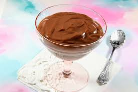

Chocolate Pudding

Easy-to-make homemade chocolate pudding to satisfy any sweet tooth
Ingredients
- 3 cups whole milk, divided
- 1/4 cup Cornstarch
- 1/3 cup White Sugar
- 1 cup semisweet Chocolate Chips
- 1 pinch of Salt
Steps
- Combine 1/2 milk and cornstarch in bowl and whisk until smooth
- Combine remaining milk with sugar in a medium saucepan over low heat
- Slowly whisk in cornstarch mixutre
- Cook, whisking as needed to prevent lumps, until mix begins to thicken
- Add chocolate chips and salt
- Continue stiring until chips are melted and mix is smooth and thick - aprox 7 minutes
- Pour cooked mixture into 1 large bowl or 6 smaller bowls/cups
- Place platic wrap directly on top of pudding to prevent a skin from forming
- Refrigerate for 3 to 4 hours before serving
- Enjoy
Home